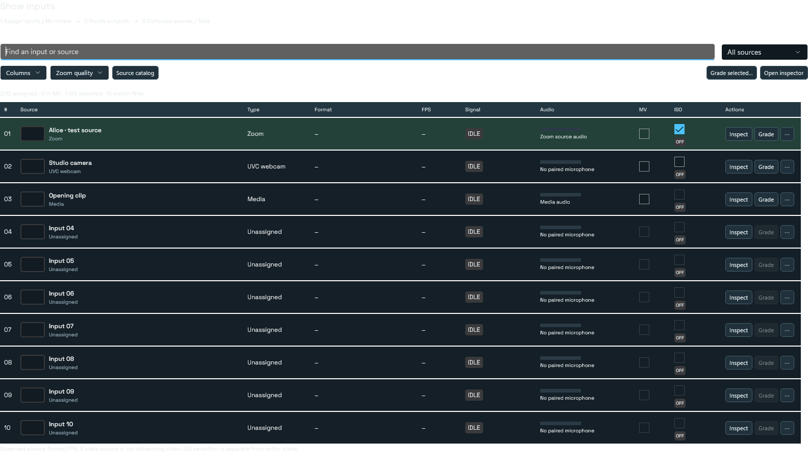
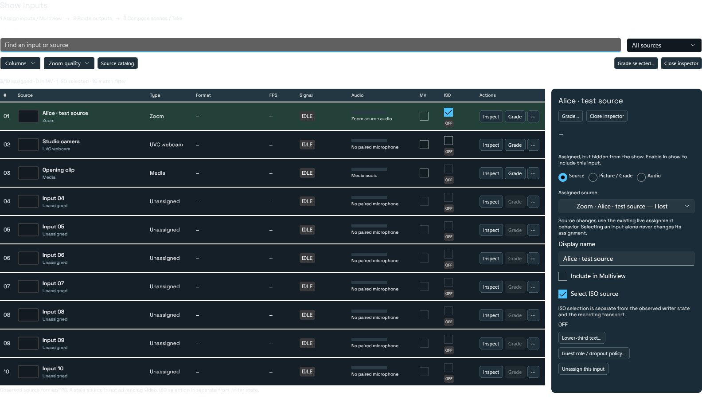

The approved Sources design, implemented.
The table is the default workspace. Open the inspector for a selected input, or launch its existing full grade editor directly. Your installed app has not been changed.
Scan every input
Retained rows keep source identity and previews stable. Format/FPS, MV inclusion and ISO arm remain directly available. Search, categories, saved column choices, Zoom quality and source catalog stay within the Sources workflow.

Inspect the same selected input
The inspector opens beside the table on wide layouts and below it on narrower layouts. Source, Picture + Grade and Audio groups reuse the existing source assignment, lower-third, policy and pairing controls. Grade is reachable without opening the inspector.

Keep the full native grade editor
Both Grade entry points target the selected source’s existing editor. Curves, LUTs, scopes, drawn ROI, comparison, presets, undo and acknowledged Apply are retained.

Review this implementation
Compare the screenshots with the approved mockup, then use its existing private feedback form. Mention “native table,” “native inspector” or “native grade” so the note points to the implementation.
Implementation PR #914 · Uninstalled review candidate; no app release or webcam registration change.